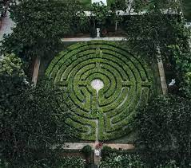
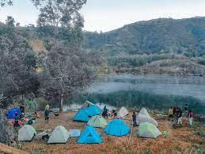

Photography
Upload Here!
“We are making photographs to understand what our lives mean to us.”
5 Tourist Spot in Toledo City, Cebu
Toledo City, locally dubbed as the Copper City, is one of the leading cities when it comes to different industries. But aside from this, the beautiful city of Toledo is never behind when it comes to their tourism.
Here are some of Toledo’s top attractions that everyone should visit.
1. Maze Garden at The Labyrinth
This puzzled pathway has made a buzz in social media since it first opened to the public last year and visitors have found this as a perfect spot for their Instagram-worthy shots. This labyrinth is a sight to behold with its intricate design, where statues are also available nearby.
How to get there?
Exact location: 920 Diosdado Macapagal Highway, Poblacion, Toledo City, Cebu — approx. 2 hours away from the city.
By Bus: From the South Bus Terminal, ride a bus bound for Pinamungajan. Ask the driver to drop you off at Capilla Sta. Ana. Bus fare is ₱100 /head (one-way).
By Car: Just navigate with Waze or Google Maps and set your destination to “Capilla Santa Ana Museum and Community Center”. Parking space is available.
2. Lake Pingganon(Lake Bensis)
This hidden gem is perfect for those who love to trek and camp overnight as you have to go and do some trekking before you reach this magnificent lake. It has a view that is also picturesque, granting you that sweet escape.
How to get there?
By Public: If you’re commuting, from the highway or CIT University or Punta Princesa, take any jeepney or multicab going to Tabunok/Minglanilla/Naga. Ask the driver or conductor first if it will pass by Tabunok. Disembark at RD Pawnshop in Tabunok Market.
From there, ride a habal-habal that can take you to Lake Pingganon/Bensis. Estimated fare is around ₱200-250 per head (roundtrip). They can take you to the church near Lake Bensis and the travel time is roughly 30 minutes. Upon arriving to the church, you can ask the locals for directions towards Lake Bensis.
3. La Vue Cabine
Located atop a mountain, this is the perfect place for that much awaited overnight reunion with the barkada. La Vue Cabine is an exclusive wood cabin that lets you see the beautiful part of Toledo in a grander scale.
How to get there?
Sitio Babag 2, Brgy. Pangamihan, Toledo City — 2-3 hours away from the city, 31km away from JY Square Mall in Lahug.
4. Malubog Lake
This part of Toledo has it all – with its Malubog Lake that has crystal clear waters that entice you, the Malubog Falls with its unique blue waters and also the Malubog Tunnel, where your inner explorer is unleashed by its fascinating view.

How to get there?
Location: Toledo City, Cebu
From Cebu City South Bus Terminal, you can ride a bus bound to Toledo and you can request the driver or conductor to be dropped off at Barangay Madugo, specifically at the Julie’s Bakeshop within the area. You can then ride a habal-habal with an estimated fare of Php 60 per person, directly to Malubog Lake.
5. Biga Pit
At first glance you might think you’re in the Grand Canyon but actually this is a hidden gem in Toledo. Despite it being technically a wasteland, you can still visit it for educational purposes or private tours with the permission of the mining company.
How to get there?
Exact location: Barangay Biga, Toledo City, Cebu
By Commute: If you’re commuting, from the highway or CIT University or Punta Princesa, take any jeepney or multicab going to Tabunok/Minglanilla/Naga. Ask the driver or conductor first if it will pass by Tabunok. Disembark at RD Pawnshop in Tabunok Market.
From there, ride a habal-habal that can take you to Biga Pit. Estimated fare is around ₱200-250 per head (roundtrip).